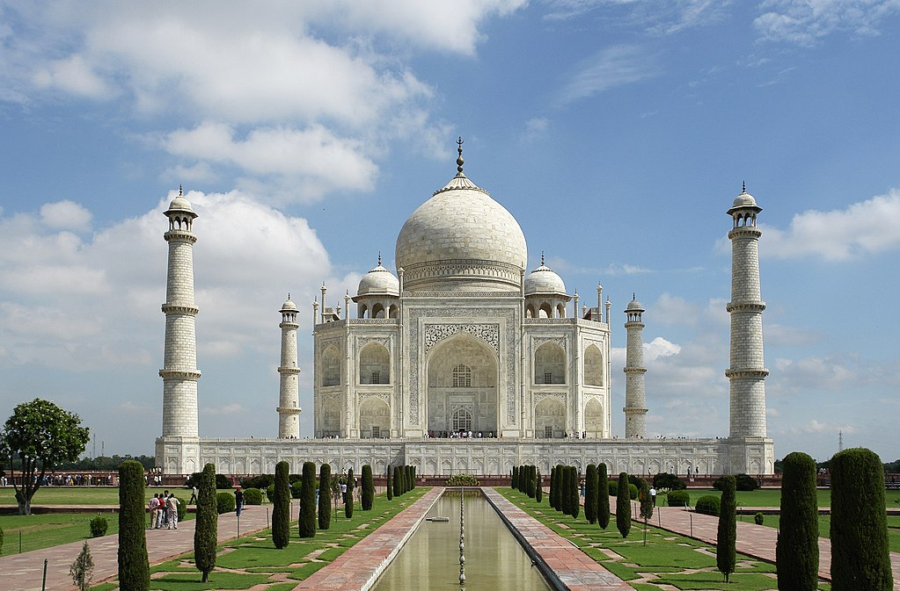
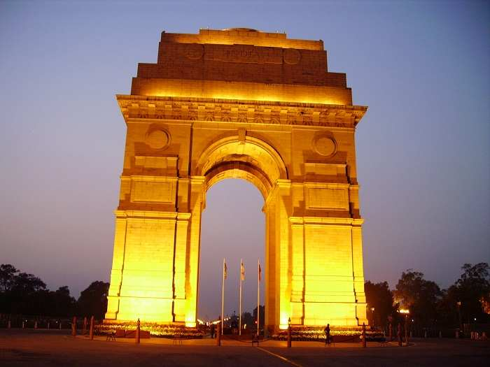
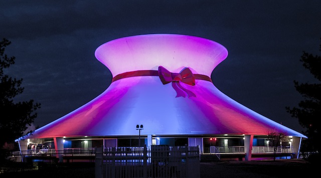

These are the place, i visited with my family and Every one in my family love it !!

The Taj Mahal meaning Crown of the Palace is an ivory-white marble mausoleum on the south bank of the
Yamuna river in the Indian city of Agra. It was commissioned in 1632 by the Mughal emperor, Shah Jahan (reigned 1628–1658),
to house the tomb of his favourite wife, Mumtaz Mahal. The tomb is the centrepiece of a 17-hectare complex,
which includes a mosque and a guest house, and is set in formal gardens bounded on three sides by a crenellated wall.
Construction of the mausoleum was essentially completed in 1643 but work continued on other phases of the project for
another 10 years. The Taj Mahal complex is believed to have been completed in its entirety in 1653 at a cost estimated at the time
to be around 32 million rupees, which in 2015 would be approximately 52.8 billion rupees. The construction project
employed some 20,000 artisans under the guidance of a board of architects led by the court architect to the emperor,
Ustad Ahmad Lahauri.
The Taj Mahal was designated as a UNESCO World Heritage Site in 1983 for being "the jewel of Muslim art in India and one of the
universally admired masterpieces of the world's heritage". Described by Nobel laureate Rabindranath Tagore as "the tear-drop on the
cheek of time",[6][7] it is regarded by many as the best example of Mughal architecture and a symbol of India's rich history.
The Taj Mahal attracts 7–8 million visitors a year. In 2007, it was declared a winner of the New7Wonders of the World (2000–2007)
initiative.
|  MY Family Picnic Places |
The India Gate, (originally called the All India War Memorial), is a war memorial located astride the Rajpath,
on the eastern edge of the ceremonial axis of New Delhi, India, formerly called Kingsway.
India Gate is a memorial to 82,000 soldiers of the Indian Army who died in the period 1914 in the First World War,
in France, Flanders, Mesopotamia, Persia, East Africa, Gallipoli and elsewhere in the Near and the Far East, and the
Third Anglo-Afghan War. 13,300 servicemen's names, including some soldiers and officers from the United Kingdom, are
inscribed on the gate. The India Gate, even though a war memorial, evokes the architectural style of the triumphal
arch like the Arch of Constantine, outside the Colosseum in Rome, and is often compared to the Arc de Triomphe in Paris,
and the Gateway of India in Mumbai. It was designed by Sir Edwin Lutyens.
In 1971, following the Bangladesh Liberation war, a small simple structure, consisting of a black marble plinth,
with a reversed rifle, capped by a war helmet, bounded by four eternal flames, was built beneath the soaring Memorial Archway.
This structure, called Amar Jawan Jyoti, or the Flame of the Immortal Soldier, since 1971 has served as India's Tomb of the Unknown Soldier.
India Gate is counted among the largest war memorials in India.
|
| Kids like fun Places |
The St. Louis Science Center, located near the southeast corner of Forest Park, combines what was originally two completely
separate institutions: the Museum of Science and Natural History, founded by The Academy of Science of Saint Louis in 1959,
and the James S. McDonnell Planetarium, which first opened in 1963. (The two institutions merged in the mid-1980s.)
The center's primary mission has been to educate schoolchildren about the mysteries of the universe. It has been called one of the
top science centers in the country and one of only two that offers free admission; it serves 1.2 million visitors annually.
In addition to the Planetarium,
the center offers the OMNIMAX® Theatre, a large format, 70mm film projection system, and various permanent exhibitions.
for more details Click
|
My Dream Place switzerland !! WOW
 My Dream Place switzerland !! WOW My Dream Place switzerland !! WOW |
 DreamLand DreamLand |